If you’re reading this, then I’m dead(or the module’s over, one of the two). I have written this guide to stop you from making the same mistakes I did. SAVE YOURSELF!!!
Jokes aside, hopefully this blog post should explain my work on this project over the past number of weeks, and make it easier for you to make a similar project, or to continue on with this one.
The goal I was given for this project was to “easily tidy and reconfigure a PC,” to be able to put a computer into a tidy state, moving files to better organise the file system, and delete things that weren’t necessary. You may have noticed the first major hurdle for the project in the last sentence, programs tend not to like it when you move their files, so how do we move them in a way that doesn’t break the program and even before that, how do we know which files belong to which program.
That leads us to the first technical goal of the project, detect which files belong to which program. We’ll talk more about how I achieved most of that goal, and plan to achieve the rest in later sections of this post.
The next goal is to figure out whether we can edit files belonging to programs to change file paths within them, because if a program is looking for its data_file.txt file under Downloads, and we move it to Documents, the program is going to be annoyed and go on strike, because it can’t find the file.
If we can change the file paths, we can move all the files that a program requires into a more logical position, and simplify the file system.
Another goal was to be able to backup and restore a program, should that program be deleted.
The main obstacle to this project that was apparent from the start was that there are a few million different ways that a program could install itself onto the file system.
If every program on windows used the MSI installer, it would be a lot easier, we could wait for an installer to run, and then follow what it does to the file system. However, because we can’t be sure that it will work, we need a more general solution.
For this project, I settled on a more manual system. I created a file system and registry scanner(more on that later) that are triggered from a local webpage(a webpage was chosen because HTML and CSS make it a lot easier to customise a UI than it would be with a python GUI). The way the scanner would work is that you’d start the scanner and then start an installer program. You’d wait for the installer program to finish, and then stop the scanner. The scanner would then create a file to store the changes that the program made to the file system and registry.
This allows us to make templates of programs that show us how they install, which could then be used to detect a program on a file system, by checking if the program files we have found exist on it.
The main goal of the templates is to see how they change when you install a program in different places, so that we can understand how to move the file without breaking the program. This would then allow us to move the programs into a tidier state, decluttering the file system.
Before we start, I must warn you that this project changes the Windows Registry, and as such, there is a risk attached to using it, as I cannot guarantee that the project is 100% stable, and could potentially corrupt the registry. This is unlikely, but not impossible, so be careful as you carry this or a similar project forward.
As you will have seen above, this project has a number of stages, some of which I have not finished, and some that haven't been started. Hopefully this guide will help you to finish the project. I’ll give a description of what’s involved in each area of the project, and then go into a bit more detail on how I’ve approached the stages so far, so that you can understand how the code for this project works and build on it.

For this project, it was important that the program was ready to go whenever the user needed it. To achieve this, this project uses a user interface similar to that of discord, where a small application sits in the system tray, and controls a webpage that is used as the control panel(On Discord, if you press Ctrl-Shift-I, it’ll bring up the inspect element window that is available in most web browsers, allowing you to change what your discord looks like temporarily. It’s not relevant to this project, but it is cool).
In this project, this will be implemented by telling Windows to start an application on startup. This application will be our system tray application, which I have designed using the WxPython library(wxPython). I have not set it up to run on start-up, because I needed to be able to update the UI code on the fly as the project went on, but this is something that you could set up once the interface is finalised. You can read my how-to guide on making a system tray application with WxPython in the GitHub repo here.
The system tray application would then start the web application that is built using Python Eel(Python Eel). Python Eel allows you to link python functions to an HTML webpage, and then creates a local webserver to run the webpage. Using this model allows you to combine the aesthetics of a website with the functionality of a python program.
The system tray application can then control making the webpage visible and invisible, as it does in discord, allowing the computer’s user to get on with their work without the program cluttering their desktop, and only call the program when they need it.
A large part of this project is the ability to detect when the file system has changed due to an installation. This project uses a python library called Watchdog(Watchdog). Watchdog is great because it has functionality that detects every change in a directory you point it at, and allows you to handle what to do with the data it returns. This saves us the time and complexity of performing complete snapshots of the file system and comparing them to find differences, and allows us to focus on the changes themselves. In this project, we simply point the scanner at the root of the file system, and then use event handlers to store every change that Watchdog tells us about.
Another major part of this project is scanning the registry for changes.(This part has been the bane of my existence for multiple weeks during this project, so hopefully my explanation later in this blog should save you a lot of googling and reading documentation). Unfortunately, there are not many ways to detect changes in the registry in python, so a good amount of this section of the project is done manually.
In windows, the registry cannot be actively scanned because it is pretty much constantly in use. What is possible while the registry is in use is to export the Registry Hives(I’ll explain more about them later on) using a built in Windows command module “REG”(reg commands | Microsoft Docs). We are then able to use a python library, Regipy, to interact with the exported hives.
Regipy is very sparsely documented, so hopefully this guide will fill in some of the gaps in the documentation.(You can find the documentation here: Regipy).
fill in some of the gaps in the documentation.(You can find the documentation here: Regipy). Regipy allows you to retrieve keys from a registry hive, and so in this project it is used to find out which keys have been changed during an installation.
The python implementation of regipy does not allow you to find differences between two hives, but each key in the registry has a last modified date within it. This project pulls this date out of the key, and checks whether the key has been changed during the time of the installation. If so, we perform different operations on the key to retrieve the changes from it that had been made during the installation.
Don’t worry if this doesn’t seem to make sense now, we’ll explain it more thoroughly in the technical section of this blog post.
Remember that the main purpose of us scanning the file system and registry is to be able to move programs in the file system without breaking them. In order to do this, we need to know which files belong to each program that gets installed. So once we have detected the changes that a program has made to the system, we need to store those changes so that we know which files need to be moved when we move a program. For this purpose, the scanner in this project creates program template files. We use JSON files for this, because it is the easiest way to read data into the program. (JSON Documentation)
Each template file we create contains a nested dictionary. Each key in the dictionary is a different type of change on the file system, such as “deleted file” or “HKCU key created” This dictionary allows us to easily store what changes have been made to the file system and registry, which we can then use to move programs without breaking them.
One of the problems with the fact there are so many ways to install a program is that we will be able to move some programs across the file system without issue, whereas others will break if we move them, because they contain absolute file paths. So our project will not work with all programs, as often it is impossible to change file paths within files because we would need to reverse engineer the programs, which is often illegal.
In order to ensure that our project is as useful as possible, part of the project is to use our scanner while we install popular programs, and then manually check the template files to see what happens when we change the install location. We also run difference operations on files after they have moved, to see if they have changed. If we find differences, this might show us where the paths are stored in the program. If we could then change those paths, we could then move the program and its files without breaking the program and the law.
This is an area of the project that I have not started work on yet, and so will not be described in the technical section, although I will outline it here, as if I do not finish it within the time of the project, this could be a good starting point for you to continue the project.
As was explained in the introduction, one of the goals of this project is to be able to move files into a more logical position, in order to clean up the file system. So in this area of the project, we use the template files to move programs without breaking them.
Another part of the project that I have not started yet is the ability to ask the user which programs on the file system they wish to keep when we tidy the computer, and then to delete any that they do not wish to keep. You may think that this should be easy, we can just call the uninstaller for any programs that we wish to delete and leave it at that. But a big reason that this project is necessary is that program uninstallers frequently leave behind program files and registry entries. So it is our job in this project to “babysit” the uninstaller, by checking that it has removed everything that it created when it was installed, and removing anything that it ignored.
An additional goal of the project that I have not attempted is the ability to set up a custom installer.
A user would specify which program they want to install, and our installer would call the program’s installer, and get it to put the program in a logical location, and would then move and alter any files that the installer created in different places.
This would then allow us to ensure that the file system is always tidy, as we would be in control of how programs installed themselves on the file system.
The files for this project are located here. Before we get into how the project works, I’ll take you through how to set it up, and how to use it.
First of all, download the zip file from the repo, and unzip it wherever you want your project to be. The file structure at the top level should be the following:
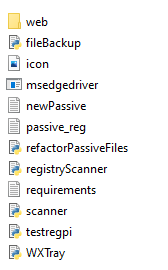The web folder should look like this:
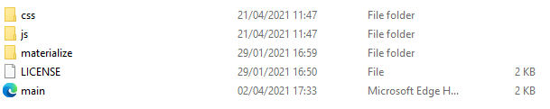This project uses Python 3, if you do not have Python on your computer, follow this guide to get it installed: Python Installation Guide.
The only other thing that you need to do to set up this project is to install the python libraries required for the project. There is a requirements.txt file in the project, so you can use “pip install -r requirements.txt” which will install all of the libraries automatically, or if you prefer, you can manually add them using the commands below:
Watchdog: pip install -U watchdog
Eel: pip install eel
wxPython: pip install -U wxPython
Regipy: pip install regipy
To use the project, run the WXTray.py file as administrator. You may have to wait for a minute for the browser interface to open. When it does, it should look like this:
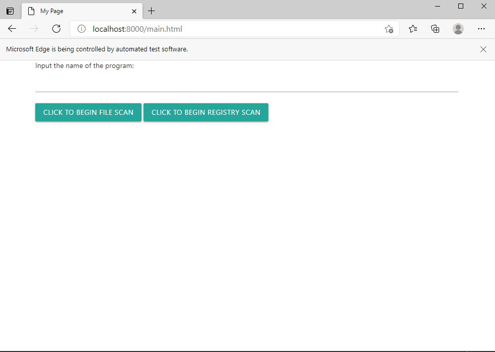In order to scan a program installation using this project, first type the name of your program into the textbox and then press “Click to begin file scan.” When an alert box that says “Scanning File System” appears, start installing your program. When your program has finished installing, press “Click to begin registry scan” and wait until you see an alert box that says “Template Successfully Created”. Once you see this, it means that the scanner has created a template file containing the changes to the file system and registry.
To backup a program once you have a template file, run fileBackup.py as administrator. A python console should appear that looks like the following:
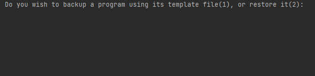Once it does, type 1 into the console and press enter. It will ask you to give the file name of the template., input whatever name you typed into the textbox at the start of the scanning process, and press enter. The program will then backup any files it detected had been created during installation, using the template file the scanner created ass a reference.
To restore a program, follow the steps for the Backup program, but type 2 at the start rather than 1. Once you have input the template name, it should restore the program to its original location using the backup.
In this section, we will go through the technical details of each area of the project, explaining the code and the design desicions that have been made.
We won’t spend much time on the UI here, as my guide for creating a UI similar to that used in this project can be found here..
However, that guide talks about generally creating a Discord style web application, so I will briefly cover how the UI in this project is programmed. As mentioned in the previous section, this project uses a Python Eel UI controlled by a wxPython system tray icon. I won’t cover this line by line, as we would be here forever, but I will explain what each section of code is doing, so that you understand how the project functions.
We will start with the HTML code for the UI. As mentioned in the guide for creating a UI of this type, we can build the actual UI using HTML rather than counting pixels to try and make a nice looking python UI. This saves time and makes the project look nicer.
At this point in the project, the UI is very basic and doesn’t look particularly good, but I have included the Materialize.css framework in the HTML to improve the look somewhat.
Materialize is a css framework that makes it easy to change how your website looks without dealing with css files yourself. I won’t explain it here myself, as it has no bearing on how the project functions(you can find the documentation for Materialise here if you want to see how it works).
I will underline Materialize code in yellow, so that you know which parts of the code are purely aesthetic and which are important parts of the project.
Let's start with the head of the HTML document. As you can see, we have created two javascript functions within the head. The first of these, startInitialScan() is used to let our scanner program know that we are starting an installation, so that it starts scanning the file system and makes a before snapshot of the registry. It retrieves the value of an element called “programName” which is a textbox on the web page, and validates whether anything has been entered into the textbox. It then passes the name to the python function “triggerFileScan(), which starts the scanner.”The second javascript function lets the scanner know that the installation is finished, so that it stops scanning, takes an after snapshot of the registry, compares the two, and creates the program template file that records the changes.
You will notice that both functions call a method of the “eel” java library. This causes the javascript file to look for any python functions in the web server that have names matching those that it is calling, and to run those functions, returning the results back to the webpage.
Both of our functions have “alert” functions, which return whichever values are given to them by the python functions. These are only here as a debugging tool, to show us that the functions are executing when they are clicked. As with all debugging code, they should be removed before the project is given to an end user.
Next, we will look at the body of the HTML application. As I mentioned above, the webpage is sparse at the minute, because the focus of the project has been on the functionality within it. The important thing to note here is that the buttons in the webpage call the functions that we defined in the previous section, and the input of type text is the textbox into which the user inputs
Lastly for our UI, we need to look at the WxPython code that runs our system tray application. Luckily for us, this code is almost identical to the code in the UI tutorial, and so we require only a couple of minor tweaks to make it fit for use here. As you can see from the screenshot above, we need to add the isAdmin() function and the code that uses it. We need these to ensure that the program is executed with administrator permissions. As well as this, we have changed the startWebApp() function to startScanner() and changed the code within it to run our scanner program. Apart from those small changes, everything else in the file remains the same, so we are done with our UI.
Before we get into the actual scanner functions, I will run through the libraries that this project uses. The comments in the below code should explain what each library is being used for(The project also uses regipy, which is not shown in this screenshot):
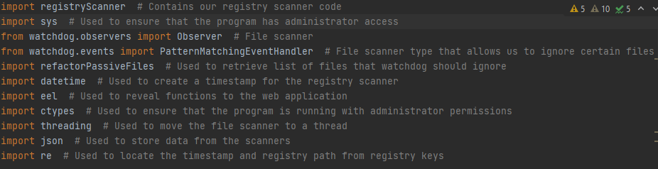Before we get into the actual scanner functions, I will run through the libraries that this project uses. The comments in the below code should explain what each library is being used for: Additionally, although not shown in this image, we use regipy(for scanning copies of the registry), winreg(for querying the live registry) and shutil(for copying files on the file system)
Our file scanner code is contained within the main server program so that it can easily access the variables it requires. It is used to detect any changes in the file system made during installation, and store the location of those changes. This allows us to ascertain where a program is installing its program files.
The first set of four functions that we need for our file scanner are the event handler functions. When Watchdog detects a type of change in the file system, it creates an event. This is very useful for us, as Watchdog allows us to create functions to handle these event types, so that we are in control of what we use the event for in our program. For our project, we have handlers for four events, the file creation event, the file deletion event, the file modification event and the file move event. We will run through one of them here, as they are all very similar:

A lot of the functions in this project contain print statements and returns that aren’t necessary for the program, but make debugging the program a lot easier. I have commented in the program as to where these are.
Watchdog passes the file path of any event it detects to our handling function, which allows us to append it to the “files_created” list. This list is a global variable that holds all of the files that the installation has created. You will see that this only takes about two lines of this function. The rest of the function forms part of our file filter.
Using this filter, the file scanner omits certain files that are passively generated by the operating system, which would give us false positives in our template files.
Watchdog allows you to specify a list that it uses as a filter, ignoring any files within it. However,Watchdog makes you choose whether you want to omit exact file names, or directories from your search. For the most part, we want to ignore exact files, in case someone writes a program that randomly decides to store its data in the Downloads folder, for example. But in certain cases, we also want to ignore certain directories that create lots of temporary files
For example, Microsoft Edge's UserData folder created a lot of temporary files. So instead, the function calls the global list ignore_patterns, which contains file paths for folders that we want to ignore. As you will see throughout the project, I have removed backslashes from the file paths before I compare them, to prevent any of the issues with Python handling escape characters. To ensure that the path we are checking does not belong to a folder that we want to ignore, we see if our filter string is contained within the string we are checking. If it is, then the string we are checking is contained within a folder we want to ignore, and so we don’t append it to our list of files_created. If there are no matches, then the file is one we want to save, and so we append it.
You will notice that in the section above, I mentioned the ignore_patterns list. As you can see above, this list is returned from a python function called returnListOfPathsToIgnore(). Below, you can see how this list is constructed:
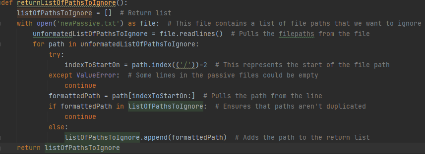To create this list, the function opens a text file called newPassive.txt, and makes every path in the file an item in the list. Here are the contents of newPassive.txt:
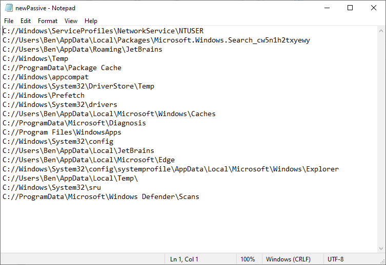Each line is a folder that we want to ignore, because it is constantly updated by Windows, and as such, would give our scanner false positives. So if you need the scanner to ignore a folder, simply type the folder’s path into this file and it will be filtered out of the scanner results.
The next function we need for the file scanner is the “triggerFileScan()” function. This is the function that is triggered by the user pressing the “start file scan” button. The purpose of this function is to set up the watchdog scanner. We’ll take this function in parts, as it has to handle a lot of setup required to scan the file system.
In this section, we first take the template_name that the user has input into the webpage, and make it global, so that it can be accessed when the time comes to create the template file. We then run the “getInitialCopyOfRegistry()” function. This function creates a copy of the hives of the registry that we use as the initial registry snapshot. We then store the time that the installation starts at. We use this to search the registry for keys. If the key has a modified date after this date, then it was created during the installation that we’re tracking, and so we want to know about it. We store this datetime as a global variable, so that we can access it from the registry function later on.
The next section that we will look at sets up the file scanner. *Flight Attendant voice* If I could direct your attention to the sixth line of this screenshot, this is where we create a handler for the file system scanner.
In the first four lines, we specify the parameters for our handler. I’ll explain the four parameters we are using:
In the last four lines of this section, we assign the event handler functions that we created above to the file scanner’s events, allowing us to handle the events created by the scanner.
The last section of our triggerFileScan() function starts by specifying the path that the file scanner should scan. Because we want to scan the whole file system, we specify the root of the file system. You may have noticed that this does not take into account computers with multiple drives. The program could be refactored so that it checks whether the computer has a SATA drive, and then runs a scanner for each drive, but I have not attempted this, so this could be something you could do to advance the project.
Next, we create an observer object and set it as a global variable. The observer is the object that does the actual scanning of the file system, it uses the information we have provided in the “myEventHandler” object to decide what to ignore and what to trigger an event for.
We pass the observer the event handler, the path we want to scan, and a boolean for recursive, this determines whether the scanner checks just the specified folder, or whether it scans subfolders as well. Because we want to scan the entire filesystem, we set this to true.
We then call the startFileSystem function in a thread. That function is used to start the file scanner that we have set up in this function. We start “startFileSystemScan” in a thread, because it is a function that continues until terminated, so it would cause the program to hang if it was executed in the main program.
The last function that we need for our file scanner is startFileSystemScan(). This function starts the scanner that we defined in the last section. It also defines an end condition for the scanner, a KeyBoard Interrupt. This is not how we terminate the scanner in our program, but it does give you a way to end the scanner if it is being unresponsive.
We will now take a look through the functions of our registry scanner program. We’ll start with the functions contained within our main program, and then go through the registryScanner program that contains our functions that do the actual scanning.
The first function that we should look at is terminate_file_scan_and_start_registry_scan() (sometimes my genius for function names knows no bounds). The purpose of this function, as may be apparent from its name, is to stop the file scanner and start the registry scanner
Like the triggerFileScan() function, this function is prefaced by “@eel.expose” which allows it to be triggered from our webpage.
As you can see, the function calls the handler for our file scanner, and ends its scanning process.
The third and fourth lines in this function are ones that we need to pay close attention to. As you can see, we are storing the results of the beginRegistryScan() function(which we will look at shortly) in a number of variables, and then passing these variables to the create_dict_for_json function. Each of the variables that we use here stores created key values, modified key values and deleted key values for a hive of the registry.
The Windows Registry contains five primary hives, but we only need four of them, HKCC,HKCU,HKLM and HKCR. This is because the fifth key, HK Users, although it technically stores information on all users on a system, it usually only stores information for the current user, which is covered by HK Current User, so HK Users is redundant for our purposes.
You may notice that we have hives here called hardware, SAM and security, but no hive called HKLM. This is because the HKLM hive is constantly in use, so it cannot be saved. However, each of the five subkeys of HKLM can be saved, and so we scan each of them for changes, and together that covers the entirety of the HKLM hive. In this version of the program, we are only using four of the five subkeys of HKLM: HARDWARE, SAM,SECURITY and SOFTWARE, and we are not scanning the HKCR hive either. This is because a program shouldn’t be saving to the SYSTEM subkey or the HKCR key, and so we can ignore them. The last line of this function, the return statement, passes “Template Successfully Created back to the webpage, which then outputs it as an alert to the user, letting the user know when the scanner has finished.
Don’t worry if this sounds confusing, the Windows Registry is not well documented at all, and it took a lot of trial and error to figure this stuff out, so I don’t expect you to understand all of this straight away. I will link some of the resources I used to figure out how the registry works at the end of this blog, so you can read through those to get a better understanding of the registry scanner.
Luckily, we don’t need a perfect understanding of the registry in order to scan it, we just need to be able to detect changes in it. “How do we actually detect changes in it?”, you may ask. We’ll go through that in a minute.
Before we get into the actual scanning, we need to look at the function at triggers the scanner. We won’t spend long on this one, as it is fairly repetitive.
It starts by retrieving the installation’s start time that we recorded before we started scanning the file system. Then, the function “getCopyOfRegistry()” creates the registry snapshot files that we will use as an "after" copy of the registry.
We use the same function to scan each registry hive, detect_registry_changes, but we pass it the name of the hive that we want to scan, as well as the current time, and the name of the "before" snapshot for that hive. The function then returns any changes that were made during the installation of the program we are monitoring, which we then pass back to the function we looked at above.
If you’ll follow me out of the main program, and through the door marked “registryScanner.py”, we’ll take a look at how we scan the registry in this project.
We’ll start with the functions that we use to create a before and an after snapshot of the registry.
For this, we use the command line command “REG.exe”. There are multiple ways to store data from the registry using this command, but regipy(the python library we will use to scan the registry files) can only work with .dat files, which are created with the REG SAVE command, so that is the one we use here.
As you can see, the copy files of the registry that we make before installation are named XInitial.dat, while the after files are just named X.dat. This is to differentiate between them, as we need to access both within the scanner.
The /y parameter that we place on the end of each command ignores the “are you sure you want to proceed” line, which allows these functions to run without user input.
The next function on our whistle-stop tour of the project is the main function in our registry scanner. This is a large function, so we will go over it a section at a time. I have highlighted each section in a different colour to help clarify what section I am talking about.
The first section, within the yellow box, is the initialisation of data we will need for the scanner. It creates two “RegistryHive” objects, which are used to handle the registry files that we created in the previous section. It also sets up three dictionaries, which will be used to store information about any key changes that the scanner detects.
The white section only runs if we are trying to scan the software subhive, and it runs a different scanning method in order to retrieve key information. The reason this is necessary is because the software hive is so much larger than any other hive. If we were to scan it using the method we use for the rest, it would take approximately 40 hours to complete. We’ll look at how its scanning method differs later on.
Unless we’re dealing with the software hive, we then move onto the section in the green box, which iterates through each key in the hive we are scanning. For each key, it pulls the timestamp, and its path(we need the path because a name does not uniquely identify a key). We convert the timestamp to the same type as the timestamp we created at the start of the installation process(this allows us to compare the timestamps). We also call a function called registry filter, which we will look at later on. registry_filter() returns a list of registry keys that we want to ignore in our scanner, as they are changed by the file system rather than by an installation.
The red section checks to see if the key has been edited since we began installation of the program we’re monitoring. It does this by checking the timestamp that we have pulled from the key. If it is more recent than the timestamp we created at the start of installation, then the key has been changed during installation. The red section then checks whether the key is in our ignore list.
Once we know that a key has been changed, and that it is not in our ignore list, we need to know what changes have been made to it. To do this, we need to retrieve its values. To do this, we use the .get_values() method, which gives us a dictionary containing the values of the key. We contain the initial_key get_values operation in a try statement, because if an entire key has been created during the installation, it won’t exist in the original hive, which would cause the program to crash when it looks for it.
Terminology
Okay, at this point, I should go over a little bit of terminology, or everything that follows will sound like gibberish. As already mentioned, the Windows Registry contains 5 Registry Hives, and each of these hives contain sub hives made up of keys. Each key in the registry holds settings for Windows, or for programs on the computer. This is where it gets a bit confusing. A key contains variables that specify the settings that have been created. Unfortunately, Windows calls these variables “values”. That’s not bad on its own, but the problem is that each of these variables contain a name, and data, and Windows also calls the data “values”. So if a program updates the data within a key, it is changing a value value, which makes talking about the registry very confusing. To make it simpler, I will refer to the key values as variables, and the data within them as values.
Next, in the the function that I have, in an amazing blaze of creativity, called check_for_key_creation_and_deletion(), takes the key we pass to it, and checks it in both the before and after registry snapshot. It can detect three types of difference, variables that have been created in the installation, variables that have been deleted, and variables that have been modified. It returns a list for each type of change. We pass these lists to the create_x_key_dictionary() functions, which return dictionaries that store precisely what changes have been made to each variable. We then check whether each dictionary has values in it. If it does, we add it to the corresponding dictionary, if it doesn’t, then there were no changes of that type, and we ignore it.
Lastly, we return the dictionaries of changes that we have created.
Next, we’ll look into the check_for_value_creation_and_deletion() function we mentioned briefly above. This function compares the before and after snapshot of a registry key, and determines how it has changed over the course of the installation.
The first two loops in this function create lists that hold the names of each variable within the key.
The next loop is slightly more complicated, so I’ll run through the logic it follows. Firstly, it iterates through each variable name from the after snapshot, and checks whether the same name exists in the before snapshot. If the name appears in both snapshots, then the name has not been created or deleted during the installation, so we store it in a list of variable names that appear in both snapshots. If it doesn’t appear in the before snapshot, then it has been created during the installation, we save it in the names_only_in_modified list. As well as this, if the name appears in both hives, we increment a variable that is counting how many names appear in both lists. Once we have iterated through the names from the modified list, we check if this incrementer variable is equal to the number of names in the list of names from the before snapshot. If it is, then every name in the before snapshot was also in the after snapshot, and so we don’t need to go through the before snapshot. But if the incrementer is less than the number of names in the before snapshot, then there are names in the before snapshot that don’t appear in the after snapshot, and so we iterate through the before snapshot names to see which ones only appear in the before snapshot(if a name only appears in the before snapshot, then it has been deleted during installation), and store them in the names_only_in_initial list.
The next three functions that we need for the registry scanner create dictionaries that store enough data about key variables to recreate them if we needed to. They are very similar, and so going through one of them should be enough to explain how they work.
The purpose of this function is to create a dictionary that stores key variables and their values that have been deleted during installation. It iterates through the key we pass to it until it finds the variable names that have been deleted during the installation. It stores the value of each variable against its name in a dictionary of deleted keys, along with the type of the variable.
This function runs when the hive we want to scan is the software subhive. Its purpose is to detect keys that have changed during installations. There are two main differences between this function and the function that scans the rest of the hives. Firstly, in order to cut down the amount that needs scanned, we use re.search to filter out any results from the “policies” and “classes” subhives, because they are only supposed to be changed by Windows, so we shouldn’t find any installation keys within them. The second change is that we run testregpi.recurse_subkeys rather than regipy.recurse_subkeys. This is because the standard version of regipy builds up an expanding list of values within the hive as it goes through it. This list gets bigger the more keys are “recursed”, and with a hive as big as the software hive, it gets big enough that it starts having an impact on performance, with most of the processing time of the function going towards building a list that we don’t care about. To get around this, we use a slightly modified version of the function, which doesn’t build this list, reducing a 40 hour scantime down to about 5 minutes. Other than these two differences, this function works similarly to detect_registry_changes that we looked at above. There is also a softwareScan function in the registry code, but we don’t need to go through it, because it functions near identically to the scanner that we looked at in detect_registry_changes, the only difference being that it scans the software hive instead.
Unfortunately for our project, Windows passively updates the registry, which gives us false positives.
During my research I was unable to find a way to differentiate between OS changes and program installation changes(Windows doesn’t keep a list of registry keys that it changes, and I’m nearly certain that at this point, Windows is so abstracted that no one knows exactly what its doing in the background).
To counter this, I have run the registry scanner while no program was being installed in order to create a list of registry keys that Windows changes.
This function pulls this data out of the JSON file that the scanner stores data in, and stores it in a single list of keys that we can then ignore.
The final part of the project that I have programmed so far is the program template files. As we mentioned in the intro section of the blog, these are used to store the output of the scanner, the changes that an installation has made to the file system. Luckily, this part of the project isn’t particularly difficult, so we will cover it briefly.
This function takes the outputs from our file system and registry scanners, and stores them all in a single dictionary. To start, it checks whether any files in the created list are also in the deleted list, and vice versa. This is because if a file is both created and deleted during installation, it is most likely a temporary file, so we don’t need to record it. After this, it stores each type of change from the file and registry in a single dictionary, with each different type of change under a different key.
The last function we will look at here is the save_json() function.
The function is pretty self explanatory, the only thing I want to mention is the fact that one of the parameters for the function is template_name. I have not yet implemented this functionality, but the control webpage should ideally have a textbox that allows the user to input the name of the program they are installing, so that we can name the template file appropriately.
The next section of the system is the backup system. This system uses the template that we created in the last section to backup each file created during installation, so that we can restore it later. How it works is that it takes every file in the template, and copies them into a folder. Because a program could install files all across the file system, we cannot replicate the file structure of the program, so instead the program stores every file in the same folder, and names each file its file path without any backslashes(e.g. If the file is called testFile.txt and is located at C://Users/User/Downloads, then its backup file will be named UsersUserDownloadstestFile.txt). The reason for this is that it allows the program to find a backup file by taking the path of the original, removing the backslashes from it, and then searching the backup folder for a file with that name. I will explain how the directory structure is recreated in the restoration section of this guide. For now, I’ll go through each section of the Backup system.
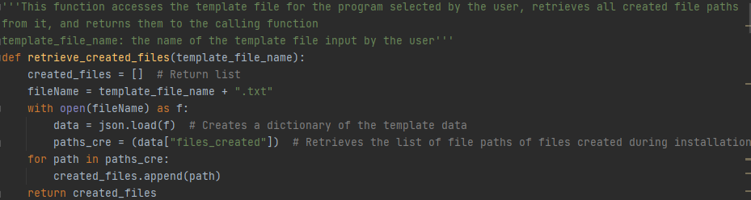The first function we’ll look at is the retrieve_created_files() function. The purpose of this function is to create a list of files that were created during the installation. Firstly, the function opens the template file of the program we want to backup. It retrieves the dictionary containing the files that were created during installation, and adds each file path to a list that it returns.
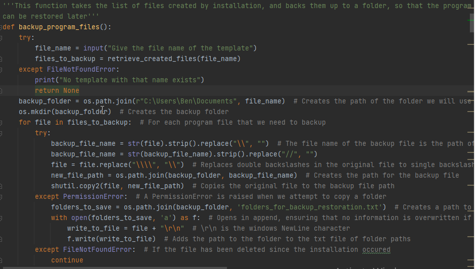Now that we have a list of the files we want to backup, we can look at how we back them up, using the backup_program_files() function. Firstly, this function asks the user to input the name of the program template that they want to backup, and creates a folder with the name of the template. This is the folder where the backup will be held. It currently creates the backup folder in the Documents folder, but you could change this by updating the path contained in the backup_folder = os.path.join(“[new path goes here].”, file_name) line of the function. The function then iterates through each file in the list of created files. For each file, it removed forward slashes and backslashes. This becomes the file’s name in the backup folder. The function then uses the shutil library’s copy2 function to copy the file into the backup folder. We use copy2 here rather than copy because copy2 copies across metadata about the file as well as the file itself, which makes the backup a more accurate copy of the original file. You will see that there is an try except surrounding the code that I just described, with two except statements to catch any Exceptions. The first of these, PermissionError, is raised whenever shutil tries to copy a folder rather than a file. This lets us know that the current file is actually a folder, as so we append the path of this folder to a text file called “folders_for_backup_restoration.txt” When we move on to restoration, we will see how this txt file is used to restore the directory structure of the program. The other exception, FileNotFound, means that a file has been deleted before the backup has happened, which most likely means that it was a temp file used for the installation only, and so we wish to ignore it, and we tell the function to continue to the next file. Over the course of the loop, every file in the program should be backed up and ready to restore, and as the registry keys and their values are already backed up in the template file, we are ready to move on to looking at how we restore our backup files.
The last section of this project that we should look at is the restore system. The restore system takes the template file and the backup folder that we created earlier, and uses them to restore the program to its original location. This would be useful if a program was accidentally deleted, or became corrupted, Let’s go through it section by section.
Because of the risk of corrupting the computer, this project does not change the PATH variable on the computer, so some programs will not be able to be fully restored
We’ll cover this first function briefly, because it does basically the same thing as retrieve_created_files() that we looked at earlier. The main difference with retrieve_created_keys() is that it takes an additional argument, which is the hive that we want to retrieve the created keys from. The function returns a dictionary with the key information for that hive from the template file.
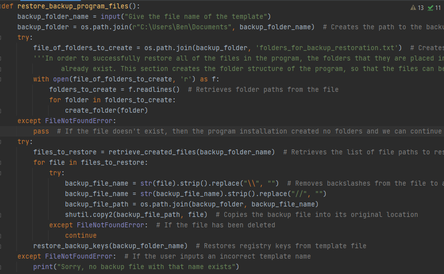Okay, let’s get to the main function for our restore program. It has a few different parts to it, so let’s look at each of them in turn.
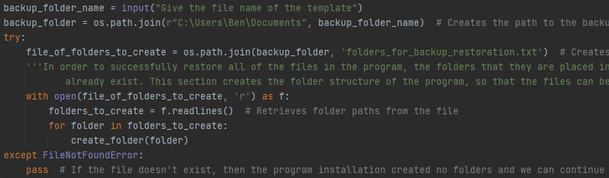First of all, the function asks the user to give the name of the program template that they want to restore. It finds the backup folder with the same name, and opens the text file we mentioned earlier, which holds a list of all the folders in the program. For each folder, it runs a function called create_folder(). I’ll go into how that function works later on, for now all you need to know is that it creates whichever folder you pass to it. So at the end of this section, the folder structure of the program has been recreated. The section is contained within a try except statement. If a FileNotFoundError is raised, then there is no file containing the paths of the program folders, meaning that the installation didn’t contain any folders, and so we can skip creating folders.
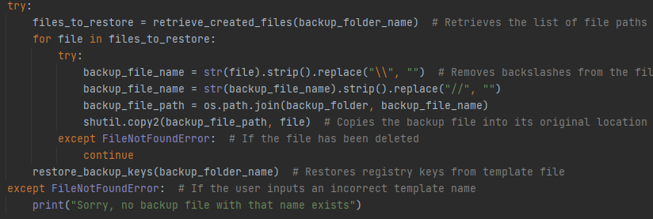After the folder structure has been created, we are now in a position to restore the program files to their original location. For each file, the function removes all the slashes(forward and back) from the file’s path, and looks in the backup folder for a file with a name that matches the result. It then copies that file back to its original position. Once this is finished, both the folders and the files have been put back into their original locations, which just leaves the registry keys. For this, we use restore_backup_keys(), which we will look at in a minute. Before we do, let’s take a look at the create_folder() function.
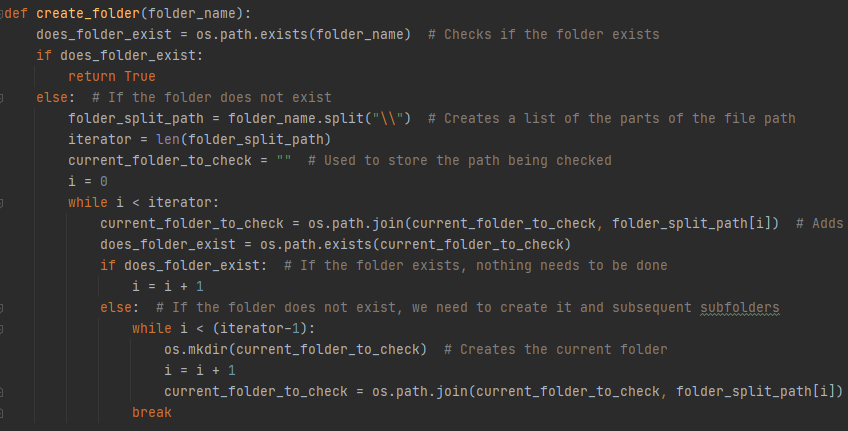When I was designing the create_folder() function, I came across an issue. If a program creates folders and subfolders within those folders, what happens if I try to create the subfolder before its parent folder. The program will crash because the subfolder needs its parent folder in order to exist. In order to solve this problem, instead of trying to directly create a folder using its file path, I instead broke down its file path into a list, e.g. “C://Users\\Documents\\Test\\Test2” becomes [“C://Users”, “Documents”, “Test”, “Test2”]. What this allowed me to do is rebuild the filepath starting from the start of the list. So first of all, the function will take “C://Users”, and check whether it exists. It exists, and so the function moves onto the next step. It adds “Documents” to the file path, making the path “C://Users\\Documents”, and checks whether it exists. It does, so it moves on again, checking “C://Users\\Documents\\Test”. This time, it doesn’t find a folder there, so it creates the Test folder, and then moves on and creates the Test2 subfolder beneath it. The benefit of using this method is that there are no errors caused by trying to create a subfolder before its folder, as if a subfolder is passed to create_folder() before its parent folder, the function will create the parent folder anyway.
We only have two more pieces of code to look at for this blog post. The first is the restore_backup_keys() function that will finish off our look at the restore system, and the second is the controller for the backup and restore programs. Let’s look at restore_backup_keys()
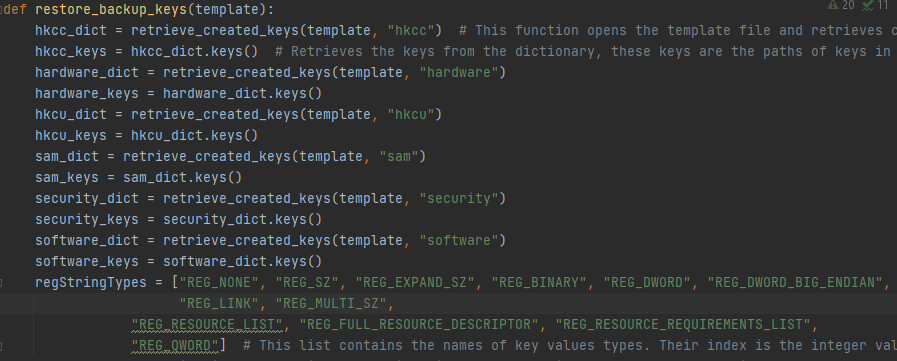Let’s start by looking at the variables that we declare for this function. For each hive in our template file, we call the retrieve_created_keys to retrieve the dictionary that contains the information on any keys that were created during installation. We then use the python .keys() method to retrieve the keys from this dictionary. In this case, each key in the dictionary is a path that points at a key in the registry. After we have done this, we define a list of registry value types called “regStringTypes”. The reason for this is that our scanner returns value types as a string, but winreg, the library that we will use to update the registry, only takes integer values for value types, and this list allows us to switch between the two methods.
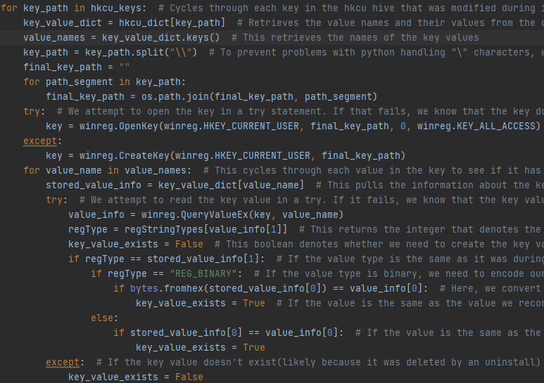If you look at the source code, you will see that the next section is repeated multiple times, once for each hive we are accessing. This could potentially be changed to a function, but I set it up this way because different hives require slightly different application of the section(for the HKCU subhives, we set final_key_path to their name, such as “SOFTWARE”, so that the paths are correct, and the dictionaries accessed vary between hives). This section loops through each key in the hkcu_dictionary. Firstly, the function accesses the key information for the current key, and uses .keys() to retrieve the value names for each value in the key. Next, it breaks the key down and rebuilds it using os.path.join, in order to prevent errors with how python handles backslashes. Next, the function tries to open the current key. If it fails to open the key, that means that the key no longer exists, and so the function creates the key instead. After this, the function iterates through each value in the key, and checks if it matches the value in the actual key. If it does, it moves on to the next value, if it doesn’t, then it sets keyValueExists to False(we will see what that does in the next section). To check if the values match, the function queries the live registry key(the one that is currently in the registry) to see if it has a value with the name we are looking for. If it doesn’t, this lets us know that the value doesn’t exist. If it does, then we check first whether the values are of the same data type, and then if the values of the values match.(In the case that the data type is binary, we first have to convert our value using bytes.fromhex() to ensure that the data is passed correctly).
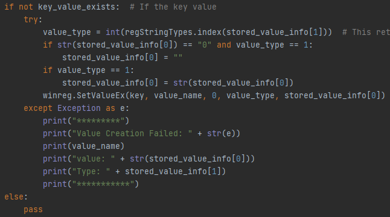If the key_value_exists boolean is False(because the live registry doesn’t contain the value or the value has changed), we set the key value to what it was at the time of installation. To get the data type, we take the data type from the template file, and use the regStringTypes list from earlier to convert the string to its corresponding index., which is an integer that can be recognised by the winreg library. If the key value cannot be created, we output the value information to the console. After this function has executed, the registry values needed by the program will have been set to what they were when the program was installed.

You will be happy to know that we have reached the last section of code that we need to look at for the project, and even happier to know that it is very small section of code. Mainly because of time constraints, the backup and restore program has a simple CLI rather than a GUI as used by the scanner program. The CLI simply takes the user’s input as to which function, restoration or backup, to run, and then the name of the template that is being backed-up/restored.
That’s pretty much it for this blog post. We've covered the progress that has been made in this project up to now, and discussed how to move the project forward. Hopefully it has given you enough insight into the project to carry it forward. In the GitHub repo for the project, you will find a Testing Plan that will allow you to test the project to ensure that it is functional. I have a completed copy of the testing plan in the same document, that shows that the project passes the tests that have been set. Before we finish, I’ll give you a few guides that I found useful during this project, to give you more insight into the workings of the project.
windows - Request UAC elevation from within a Python script? - Stack Overflow - Explains how to get administrator access in python, required for registry operations
How to Execute Shell Commands with Python - Parametric Thoughts - Shows how to execute commands in python, we use this to make copies of registry hives
GitHub - mkorman90/regipy: Regipy is an os independent python library for parsing offline registry hives - regipy Documentation
Windows Registry For Advanced Users - Windows Registry Documentation
GitHub - ChrisKnott/Eel: A little Python library for making simple Electron-like HTML/JS GUI apps - Eel documentation
wxpython - Quick and easy: trayicon with python? - Stack Overflow- Gives a few examples of simple system tray icon programs
Basic wx Application which shows a snake in the System Tray and on open and close of the context menu displays a message in the console. · GitHub - More advanced system tray application
How to Build a Python GUI Application With wxPython – Real Python - More general guide on making a GUI with wxPython
Watchdog — watchdog 0.10.3 documentation -Watchdog Documentation
Why it's not recommended to use IDs in wxPython? - Stack Overflow - Useful Information on IDs in wxPython
python - wxpython does not have 'adv' - Stack Overflow - WxPython has released multiple versions over the years, some of the tutorials you look at may be using an older version than we want
https://www.programiz.com/python-programming/json - explains how to use JSON structures in python
https://www.journaldev.com/20536/python-shutil-module - explains how to copy files using shutil
https://www.geeksforgeeks.org/python-os-path-join-method - explains how to use the os.path.join method
https://www.geeksforgeeks.org/python-os-mkdir-method - explains the os.mkdir method
https://docs.python.org/3/library/winreg.html - documentation for winreg
https://www.tutorialspoint.com/windows-registry-access-using-python-winreg - winreg tutorial